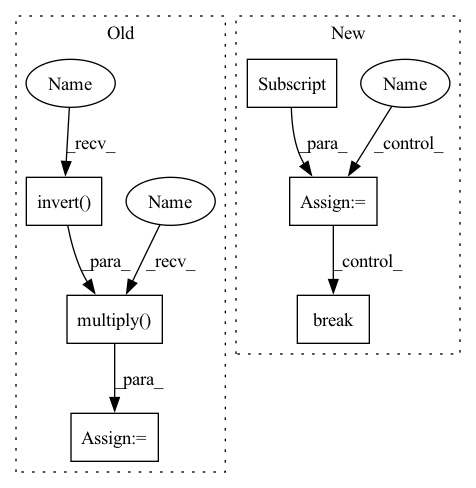

Pattern ID :33039
Before Change
print("Warning: cannot find place pose")
break
ee_to_world = pybullet_planning .multiply(
obj_to_world, pybullet_planning.invert( obj_to_ee)
)
obstacles = [plane, bin] + placed_objects
attachments = [
pybullet_planning.Attachment(ri.robot, ri.ee, obj_to_ee, obj)After Change
// place
obstacles = [plane, bin] + placed_objects
while True :
targj = robot_model.inverse_kinematics(
mercury.geometry.Coordinate(*obj_to_world).skrobot_coords,
move_target=robot_model.attachment_link0,
)[:-1]
path = ri.planj(
targj, obstacles=obstacles, attachments=attachments
)
if path is None:
print("Warning: failed to find collision-free path")
continue
for j in path:
for _ in ri.movej(j):
step_simulation()
break
[step_simulation() for _ in range(120)]
// ungraspIn pattern: SUPERPATTERN
Frequency: 4
Non-data size: 6
Instances Fragment ID: 95551089
Project Name: wkentaro/reorientbot
Commit Name: 45bdac15314395448beb253d595b936ef723dabf
Time: 2021-03-25
Author: www.kentaro.wada@gmail.com
File Name: examples/goal/bin_packing_no_grasp.py
M Class Name: AnonimousClass
N Class Name: AnonimousClass
M Method Name: main(0)
N Method Name: main(0)
M Parent Class:
N Parent Class:
M File Name: examples/goal/bin_packing_no_grasp.py
N File Name: examples/goal/bin_packing_no_grasp.py
M Start Line: 125
M End Line: 271
N Start Line: 124
N End Line: 250
Before Change
print("Warning: cannot find place pose")
break
ee_to_world = pybullet_planning.multiply(
obj_to_world, pybullet_planning.invert( obj_to_ee)
)
obstacles = [plane, bin] + placed_objects
attachments = [
pybullet_planning.Attachment(ri.robot, ri.ee, obj_to_ee, obj)After Change
obstacles = [plane, bin] + placed_objects
while True:
targj = robot_model.inverse_kinematics(
mercury.geometry.Coordinate(*obj_to_world).skrobot_coords,
move_target=robot_model.attachment_link0,
)[:-1]
path = ri.planj(
targj, obstacles=obstacles, attachments=attachments
)
if path is None:
print("Warning: failed to find collision-free path")
continue
for j in path:
for _ in ri.movej(j):
step_simulation()
break
[step_simulation() for _ in range(120)]
// ungrasp Fragment ID: 95551091
Project Name: wkentaro/reorientbot
Commit Name: 45bdac15314395448beb253d595b936ef723dabf
Time: 2021-03-25
Author: www.kentaro.wada@gmail.com
File Name: examples/goal/bin_packing_no_grasp.py
M Class Name: AnonimousClass
N Class Name: AnonimousClass
M Method Name: main(0)
N Method Name: main(0)
M Parent Class:
N Parent Class:
M File Name: examples/goal/bin_packing_no_grasp.py
N File Name: examples/goal/bin_packing_no_grasp.py
M Start Line: 125
M End Line: 271
N Start Line: 124
N End Line: 250
Before Change
camera_to_world = self.ri.get_pose("camera_link")
ee_to_world = self.ri.get_pose("tipLink")
camera_to_ee = pp.multiply( pp.invert( ee_to_world) , camera_to_world)
pcd_in_ee = mercury.geometry.transform_points(
pcd_in_camera,
mercury.geometry.transformation_matrix(*camera_to_ee),
)After Change
[0, 0, 1], normals_in_world
)
for index in random_state.permutation(pcd_in_world.shape[0]):
position = pcd_in_world[index]
quaternion = quaternion_in_world[index]
ee_af_to_world = (position, quaternion)
j = self.ri.solve_ik(ee_af_to_world, rotation_axis="z")
if j is None:
continue
obstacles = [self.plane] + object_ids
obstacles.remove(target_object_id)
if not self.ri.validatej(j, obstacles=obstacles):
continue
self.ri.setj(j)
break
else:
if raise_on_failure:
raise RuntimeError("Unable to grasp the target object")
else: Fragment ID: 95551094
Project Name: wkentaro/reorientbot
Commit Name: b83d802949b66077a903463a45aa2c388612229e
Time: 2021-07-02
Author: www.kentaro.wada@gmail.com
File Name: examples/target_pick/_env.py
M Class Name: PickFromPileEnv
N Class Name: PickFromPileEnv
M Method Name: reset(3)
N Method Name: reset(3)
M Parent Class: Env
N Parent Class: Env
M File Name: examples/target_pick/_env.py
N File Name: examples/target_pick/_env.py
M Start Line: 213
M End Line: 332
N Start Line: 268
N End Line: 340